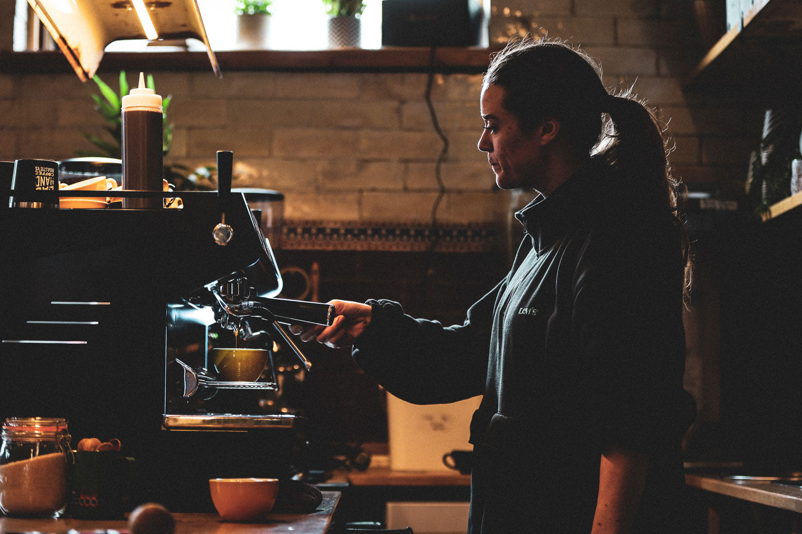
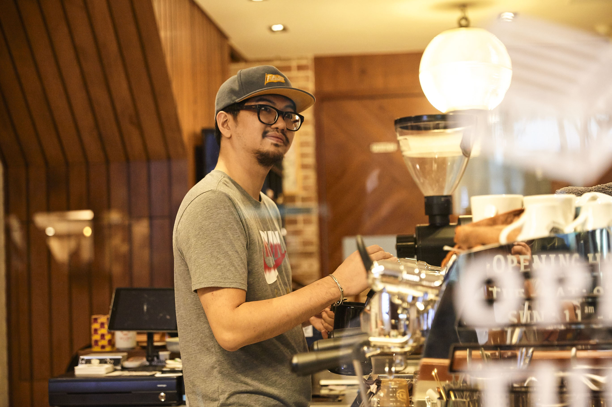

Desde
O Ritual nasceu da vontade de fazer do café uma pausa de verdade. A gente conhece quem planta, respeita cada grão e prepara tudo com atenção ao detalhe.
Por aqui, cada xícara começa muito antes do balcão e termina quando você dá o primeiro gole.
CONHEÇA A NOSSA CASA →ANO DE FUNDAÇÃO
PRODUTORES PARCEIROS
ANOS DE CASA
Grãos rastreáveis, comprados de quem cultiva com cuidado.
Receitas simples, preparadas com atenção aos detalhes.
Um balcão aberto para conversas, pausas e encontros.

É quem escolhe o café da semana e não deixa passar uma extração fora do ponto.

Criou o Ritual para que o bom café fosse, antes de tudo, uma forma de estar junto.